硅
"用于太阳能板、复杂电子设备与追踪炮塔弹药。"
| 属性 | 值 |
|---|---|
| 爆炸性 | 0 % |
| 可燃性 | 0 % |
| 放射性 | 0 % |
| 充能 | 0 % |
| 内部名称 | silicon |
| 颜色 | 53565c |
| 自然生成 | 否 |
| 建造成本 | 80% |
| 硬度 | 0 |
产出于
用于
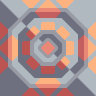 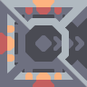 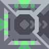 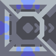 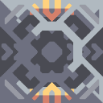 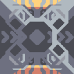 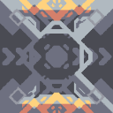 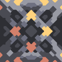 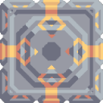
用于建造
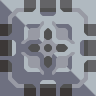 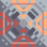 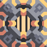 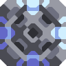 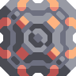 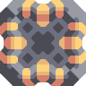 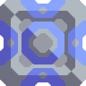 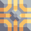 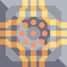 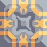 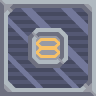 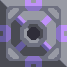 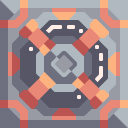 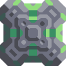 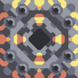 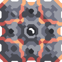 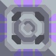 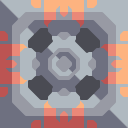 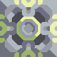 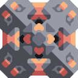 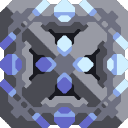 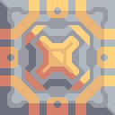 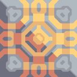 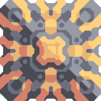 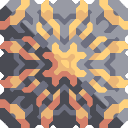 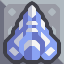 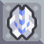 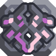 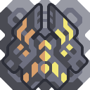 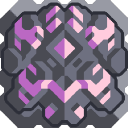 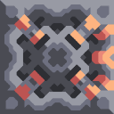 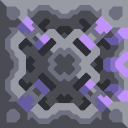 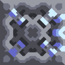 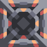 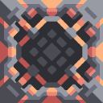 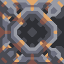 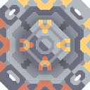 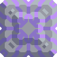 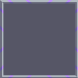